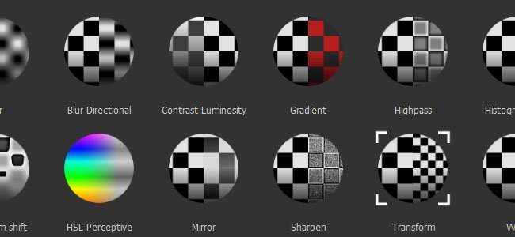

The Effects are a set of various actions that can be applied on the content or the mask of a layer in the layer stack of Substance 3D Painter.
They allow an infinite series of changes from simple color variations to complex mask creations. Multiple Effect are shipped with Substance 3D Painter by default, but you can also create your own in Substance 3D Designer.
Effects can be added to the stack through a right click on any layer or mask, or by clicking on the dedicated button on top of the layer stack window.
Most effects have a blending mode and opacity, like regular layers and can be reordered, allowing you to create a full stack of effects to create a complex mask for example.
You can right-click on an effect to reorder it but also use the ALT+Up arrow or Down arrow to quickly reorder them.
These are the different types of Effects you will find in Substance 3D Painter :